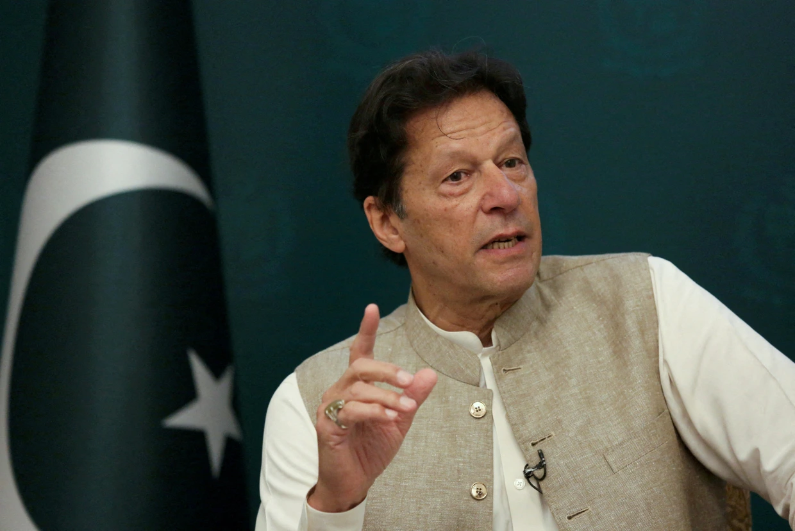

Imran Ahmed Khan Niazi (Urdu: عمران احمد خان نیازی , pronounced [ɪmɾaːn ɛɦməd xaːn nɪjaːziː]; born 5 October 1952) is a Pakistani politician and former cricketer who served as the 22nd prime minister of Pakistan from August 2018 until April 2022. He is the founder and former chairman of the political party Pakistan Tehreek-e-Insaf (PTI) from 1996 to 2023. He was the captain of the Pakistan national cricket team throughout the 1980s and early 1990s. Born in Lahore, Khan graduated from Keble College, Oxford. He began his international cricket career in a 1971 Test series against England. Khan played until 1992, served as the team's captain intermittently between 1982 and 1992, and won the 1992 Cricket World Cup, Pakistan's only victory in the competition. Considered one of cricket's greatest all-rounders, Khan was later inducted into the ICC Cricket Hall of Fame. Founding the Pakistan Tehreek-e-Insaf (PTI) in 1996, Khan won a seat in the National Assembly in the 2002 general election, serving as an opposition member from Mianwali until 2007. PTI boycotted the 2008 general election and became the second-largest party by popular vote in the 2013 general election. In the 2018 general election, running on a populist platform, PTI became the largest party in the National Assembly, and formed a coalition government with independents with Khan as prime minister. As prime minister, Khan addressed a balance of payments crisis with bailouts from the IMF. He presided over a shrinking current account deficit, and limited defence spending to curtail the fiscal deficit, leading to some general economic growth. He enacted policies that increased tax collection and investment as well as advocated for transforming Pakistan into a welfare state. His government committed to a renewable energy transition, launched Ehsaas Programme and the Plant for Pakistan initiative, and expanded the protected areas of Pakistan.